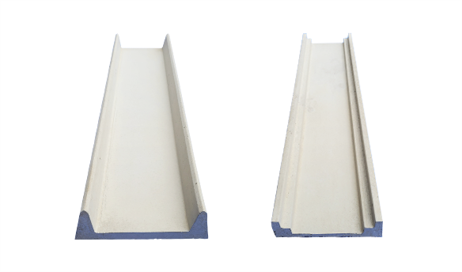
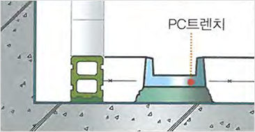
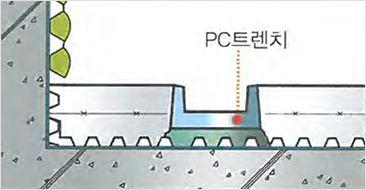
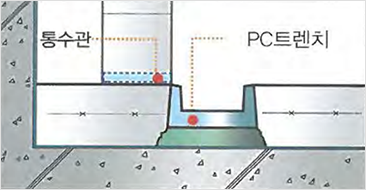
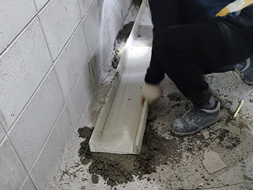
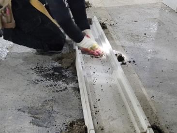
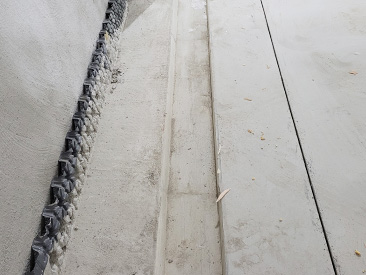

PC트렌치
미리 성형한 제품으로 침출수와 용수를 계획된 흐름으로 유도·처리하는 건식 공법
유도·처리
원활한 배수 흐름
지하 공간에서 발생하는 침출수와 용수를 기능적으로 유도·처리합니다.
건식 공법
공정 간소화
공장에서 성형한 제품을 현장에서 조립·부착해 복잡한 콘크리트 공정을 줄입니다.
규격화
계획 시공
규격화된 제품으로 시공 품질을 관리하고 공정 계획을 세우기 쉽습니다.
제품 규격
OPEN TRENCH와 GRATING TRENCH의 대표 규격을 확인하세요.
OPEN TRENCH
오픈 트렌치
- 150(W) × 40(H) mm
- 150(W) × 50(H) mm
- 200(W) × 40(H) mm
- 200(W) × 50(H) mm
- 200(W) × 60(H) mm
GRATING TRENCH
그레이팅 트렌치
- 150(W) × 50(H) mm
- 200(W) × 40(H) mm
- 200(W) × 50(H) mm
- 200(W) × 60(H) mm
- 250(W) × 50(H) mm
규격은 참고 제품 자료 기준이며, 현장 적용 전 최신 자료를 확인해 주세요.
제품 및 공법
PC트렌치 제품과 실제 시공 모습을 확인하세요.

PC트렌치 제품사전 성형된 배수 제품
현장 시공규격화된 제품의 조립·부착
표준 디테일
현장의 방수턱과 배수판 조건에 따른 적용 예시
방수턱
방수턱이 있는 경우
방수턱을 고려해 트렌치와 주변 마감의 연결 부위를 계획합니다.
배수판
배수판 적용의 경우
배수판과 트렌치를 연결해 물 흐름이 이어지도록 계획합니다.
기본형
방수턱이 없는 경우
현장 바닥 조건에 맞춰 배수 경로와 트렌치 위치를 정합니다.
적용 형태
제공된 표준 디테일 도면을 확인하세요.

방수턱이 있는 경우방수턱 연결형

배수판 적용의 경우배수판 연계형

방수턱이 없는 경우일반 적용형
시공 순서
레벨 작업부터 조인트 마감까지, PC트렌치 시공 흐름

01 · 고정 및 레벨 작업설치 위치와 높이 확인

02 · 조인트 매지 작업제품 연결부 마감

03 · 시공 완료배수 흐름과 마감 확인